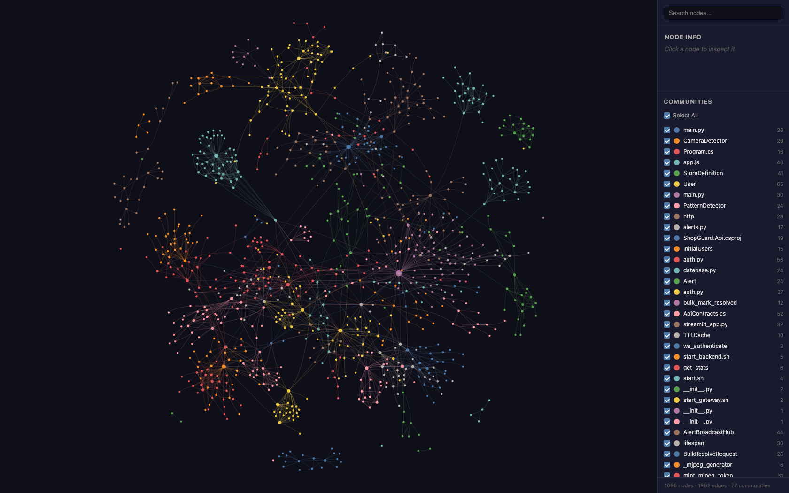
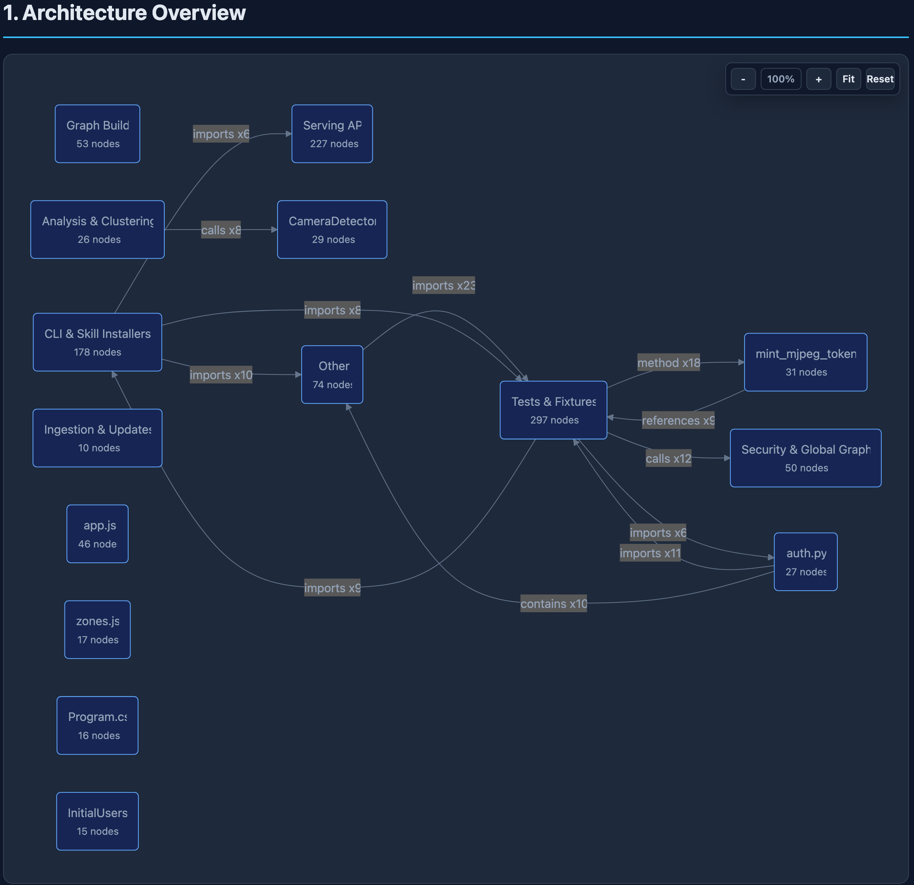
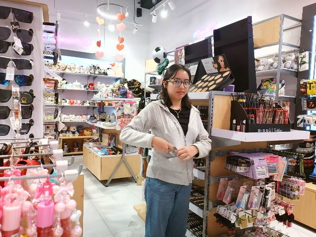
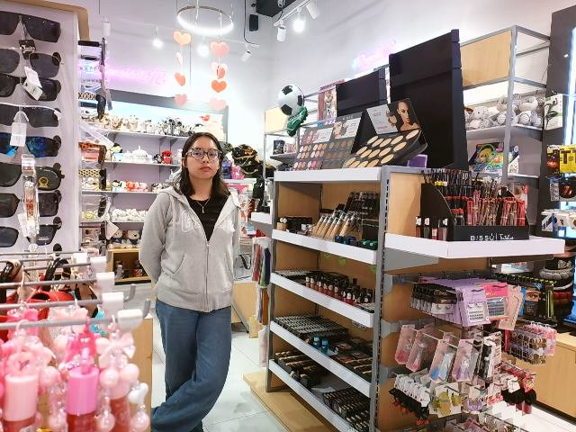

🛡️
ShopGuard
Videovigilancia inteligente con IA para retail — detección de robo
El sistema
Detecta comportamientos sospechosos en tienda 100% en local (YOLOv8 + MediaPipe),
genera alertas con evidencia, notifica por Telegram y aprende del
feedback del operador. Escala de una tienda a varias con un gateway central.
🎯 Patrones de conducta que detecta (A–D)
A
Ocultamiento de objeto
Un producto visible desaparece justo después de que la mano se le acerca.
B
Permanencia anómala
Persona quieta demasiado tiempo (umbral configurable; acotable a zonas de riesgo).
C
Postura sospechosa
Agacharse brusco, dar la espalda a la cámara o llevar las manos al torso (MediaPipe Pose).
D
Objeto pegado al cuerpo
Un objeto entra al área corporal de la persona y ya no vuelve a detectarse.
🎥 Detección
- YOLOv8 + MediaPipe Pose, en local
- Patrones A–I + modelo custom
- Ocultamiento de cualquier objeto (modo configurable)
- Zonas de empleado que evitan falsos positivos
🚨 Alertas
- Evidencia (captura) por alerta
- Telegram no-bloqueante (nivel alto)
- Reporte del día auto a las 22:00
🧠 Aprende del uso
- Resolver = robo real / falso positivo
- Falsos positivos → dataset (reentrena)
- Etiquetado y export YOLO en la UI
📊 Dashboard
- Video en vivo, alertas, historial
- Estadísticas del día + precisión
- Ayuda de admin y "Acerca de" (versión)
🏢 Gateway multi-tienda
- SPA propia que agrega N tiendas
- Alta/edición de tiendas y cámaras desde la UI, en caliente
- Login admin (cookie firmada)
🔒 Seguridad y stack
- Auth opt-in por API key · credenciales cifradas en reposo
- FastAPI + Streamlit + SQLite/PostgreSQL
- Config en BD (fuente de verdad); sin secretos en el repo
🧭
Ecosistema 360
Cómo se construye ShopGuard — desarrollo guiado por especificación (SDD)
El desarrollo
Cada feature pasa por un ciclo con puntos de control (CP0–CP5) y aprobación humana
en los gates: primero el contrato (qué y por qué), después el código, y siempre con
trazabilidad — nada se implementa sin su especificación.
🧩 Dentro de CP3 — el plan se descompone en tareas T1…Tx con dependencias
📐 Especificación primero
- Kickoff-prompt → intake → SRS → spec
- Requisitos con ID (REQ/NFR)
- Criterios de aceptación testeables
✅ Calidad (TRUST 5)
- Tested · Readable · Unified
- Secured · Trackable
- Validación + secret scan por feature
🧾 Decisiones y riesgos
- ADRs (alternativas y consecuencias)
- Decision-log + risk-register
- Matriz de trazabilidad NEED→REQ
🛠️ Herramientas
scaffold-feature.sh (crea CP0–CP5)verify-governance.sh (valida gobierno)run-quality-gates.sh
🤖 Agentes alineados
AGENTS.md = fuente de verdad- Plantillas en
templates/
- Reglas para Claude/Cursor/Copilot…
📦 Features entregadas
- Reporte diario · Zonas · Etiquetado
- Resolver = feedback · Gateway
- Gestión cámaras/tiendas · Ocultar cualquier objeto
gateway multi-tienda
employee-zone-suppression
evidence-labeling-dataset
zone-management
daily-stats-report-telegram
alert-resolution-feedback
about-version-changelog
admin-help-docs
stores-cameras-management
concealment-any-object
🏗️
Arquitectura
El sistema por dentro — capas, stack tecnológico y mapa de código
Cómo está hecho
🔩 Capas (de la cámara a la pantalla)
Captura
Webcam USBCámaras IP / RTSP
Procesamiento · 1 hilo por cámara
YOLOv8 (Lock)MediaPipe Pose
PatternDetector A–I→ send_alert()
Datos y evidencia
evidence/ (JPEG)BD alerts + config (SQLAlchemy)
credenciales cifradas
API
FastAPI + asyncioREST /alerts /stats /about…
WebSocket (alertas en vivo)
Presentación
Dashboard Streamlit :8501Gateway SPA vanilla :8080
🧰 Stack tecnológico
Backend
FastAPI (Python) + asyncio
Frontend
Streamlit + SPA vanilla JS
Base de datos
SQLite o PostgreSQL · SQLAlchemy
IA / visión
YOLOv8 (ultralytics) + MediaPipe
Contenedores
Docker Compose · PostgreSQL local
Despliegue
start.sh (local) · Docker completo (roadmap)
Notificaciones
Telegram (no-bloqueante)
Auth
API key + cookie firmada (gateway)
🕸️ Mapa de código (grafos)

1096 nodos · 1962 aristas · 77 comunidades — dependencias reales del código
(backend Python, .NET y gateway JS). Generado con graphify, se reconstruye en cada
commit. Versión interactiva: graphify-out/graph.html.
🔀
Flujo de llamadas (call flow)
Cómo se relacionan los módulos del código — vista generada del repositorio
Mapa de módulos
Cada caja es una comunidad de código (módulo/área) y las flechas son sus
dependencias reales: imports, calls, references y
contains. Permite ver de un vistazo qué depende de qué —útil para onboarding y
para razonar el impacto de un cambio.

Ejemplos: Graph Build → Serving API (imports),
Analysis & Clustering → CameraDetector (calls),
Tests & Fixtures → mint_mjpeg_token (method). Generado con graphify desde el
commit en ejecución (incluye ya config_store, crypto y
store_repo); se reconstruye en cada commit. Interactivo (zoom/pan):
graphify-out/ShopGuard-callflow.html.
imports
calls
references
contains
🛡️
Evidencia en tienda real
Detecciones y alertas ALTO capturadas en un comercio, con foto del incidente
En vivo
Prueba física en una tienda de accesorios: el sistema detecta el ocultamiento en tiempo
real, guarda la evidencia fotográfica y notifica por Telegram. Cada tarjeta es
una alerta real registrada por el sistema.
🚨 ALTO · Patrón A — Ocultamiento de objeto

"'cup' estaba visible, la mano se acercó y el objeto desapareció."
ID #65 · Cámara 0 — producto tomado y ocultado del campo de la cámara.
🚨 ALTO · Patrón D — Objeto pegado al cuerpo

"'concealing_object' entró al área corporal de la persona y no reapareció."
ID #64 · Cámara 0 — objeto llevado al cuerpo/bolsillo y ya no visible.
cámara → detección → alerta → Telegram
evidencia fotográfica por incidente
nivel ALTO en tiempo real